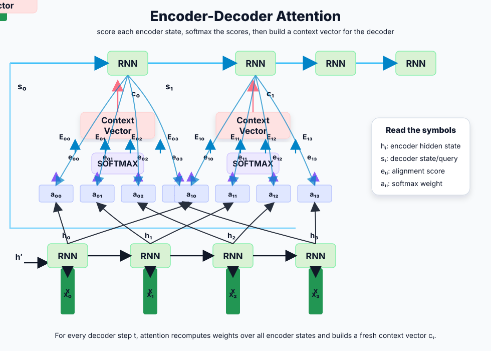

🔮 Attention注意力机制
1. Concept Understanding
Attention is a differentiable retrieval operation: for each token, the model computes how strongly it should read information from other tokens, then returns a weighted average of their value vectors.
- Query is what the current token is looking for.
- Key is the searchable index attached to each candidate token.
- Value is the content returned after the search.
- Self-attention uses queries, keys, and values from the same sequence, so tokens can contextualize each other.
- Cross-attention uses queries from one sequence and keys/values from another, as in encoder-decoder models.
- Masked self-attention is the decoder-only version used by LLMs: future positions are blocked so training matches left-to-right generation.
2. Plain-English Explanation
Imagine every word in a sentence can ask the rest of the sentence a question. The query says "what am I looking for?", each key says "what kind of information do I contain?", and each value is the actual information that can be copied back.
The softmax turns the match scores into a budget that sums to 1. A token can spend most of that budget on one important word, or spread it across several words.
3. Core Intuition
Attention works because it avoids compressing the entire past into one fixed hidden state. Every layer can build a fresh routing pattern: syntax heads may follow nearby words, semantic heads may follow topic words, and causal heads may only read from the past.
Compared with an RNN, attention gives any two tokens a direct communication path inside one layer. That removes the old bottleneck where information had to squeeze through a long chain of hidden states.
Why multiple heads? A single head has one attention distribution. Multi-head attention gives the model several distributions in parallel, often over different representation subspaces, so one head might follow syntax while another follows topic or long-range reference.

4. Key Equations
Single-query attention
What it does. First compute a match score $s_i$ between the current query and each candidate key. Then softmax turns those scores into weights $\alpha_i$ that sum to 1. Finally, output $y$ is a weighted average of the value vectors.
Scaled dot-product attention
What it does. This is the same idea in matrix form for many tokens at once. $QK^\top$ produces all query-key scores; row-wise softmax makes each row an attention distribution; multiplying by $V$ averages the value vectors for every token.
Causal mask
What it does. For token position $i$, positions $j>i$ are future tokens. Adding $-\infty$ to those logits makes their softmax probability 0.
5. Worked Examples
HW4 §2.2: two queries with one-hot keys
Source: HW4 §2.2, paraphrased. The keys are the standard basis vectors, so each attention score is just one coordinate of $q$.
- For $q^{(1)}=(6,1,0)$, the scores are $(6,1,0)$. Since $e^6$ dominates, the output is close to $v_1=(2,0,1)$.
- For $q^{(2)}=(1,1,6)$, the third score dominates, so the output is close to $v_3=(1,1,2)$.
- The output becomes approximately one value vector when the query is much more aligned with that key than with the others.
HW4 §2.3: averaging two values
With orthogonal unit keys, choose $q=\lambda(k_a+k_b)$ and make $\lambda$ large. Keys $a$ and $b$ receive equal large logits; other keys receive nearly 0 logits. The output approaches $\frac12(v_a+v_b)$.
When one key's magnitude is noisy, that single-head average is brittle. A two-head construction can use one head for $v_a$ and one head for $v_b$, then average the two head outputs.
6. Problem-Solving Tips
- Check the key geometry first. If keys are one-hot or orthogonal, dot products simplify immediately.
- Compute logits before softmax. The largest logit usually tells you the qualitative output.
- For masked attention, modify logits first, then apply softmax.
- For multi-head questions, describe what each head specializes in, then combine the head outputs.
7. Common Mistakes
- Putting the causal mask after softmax. It belongs on the logits.
- Forgetting the $\sqrt{d_k}$ scaling in the standard Transformer formula.
- Thinking values decide attention weights. Keys and queries decide weights; values are what gets averaged.
- Assuming multi-head attention always increases computation by the number of heads. Usually each head is narrower, so the total projection size stays tied to $D$.
8. Exam Focus
- Be able to write and explain $\mathrm{softmax}(QK^\top/\sqrt{d_k})V$.
- Be able to compute a small attention output by hand.
- Distinguish self-attention from cross-attention by where $Q,K,V$ come from.
- Know why causal masking is required for decoder-only language models.
- Know the robustness story behind multi-head attention from HW4 §2.3.
9. Quick Checklist
- Query asks; key matches; value returns content.
- Softmax weights sum to 1.
- Self-attention uses one sequence; cross-attention connects two sequences.
- Large logit gap means the output is close to one value vector.
- Mask before softmax.
- Multiple heads let the model attend in several ways at once.
1. 概念理解 / Concept Understanding
Attention 是一个可微的“检索 / retrieval”操作：当前 token 先算自己应该从哪些 token 读取信息，再把对应的 value 向量按权重加权平均。
- Query：当前 token 想找什么。
- Key：每个候选 token 的索引标签，用来和 query 匹配。
- Value：真正被读回来的内容。
- Self-attention：$Q,K,V$ 都来自同一个 sequence，让句子内部的 tokens 互相看上下文。
- Cross-attention：query 来自一个 sequence，key/value 来自另一个 sequence，常见于 encoder-decoder。
- Masked self-attention：decoder-only LLM 用的版本，未来位置会被挡住，保证训练和从左到右生成一致。
2. 大白话理解 / Plain-English Explanation
可以把一句话里的每个词想成一个人在查资料。Query 是“我现在想问的问题”，Key 是“每份资料贴的标签”，Value 才是“资料正文”。
softmax 会把匹配分数变成一笔总和为 1 的预算。某个词特别相关，就多分一点；几个词都相关，就平均分一点。
3. 核心直觉 / Core Intuition
Attention 有效，是因为它不用把整段历史硬塞进一个固定 hidden state。每一层都能重新决定“我现在该看哪里”：有的 head 看邻近词，有的 head 看主题词，有的 head 只看过去。
和 RNN 相比，attention 让任意两个 token 在一层里就能直接通信，不需要信息沿着很长的 hidden-state 链条一点点传过去，所以更少 bottleneck，也更适合并行计算。
为什么要 multi-head? 单个 head 只有一种 attention distribution。多头就是让模型同时开几条检索通道，通常在不同 representation subspaces 里看关系：一个 head 可以看 syntax，另一个看 topic 或 long-range reference。
4. 核心公式 / Key Equations
单个 query 的 attention
这个公式在做什么？ 先用 $k_i^\top q$ 算 query 和每个 key 的匹配分数 $s_i$；再用 softmax 把分数变成总和为 1 的权重 $\alpha_i$；最后输出 $y$ 是所有 value 的加权平均。
Scaled dot-product attention
这个公式在做什么？ 这是把单个 query 公式批量化。$QK^\top$ 一次性算出所有 token 之间的匹配分数；row-wise softmax 把每一行变成 attention distribution；再乘 $V$ 得到每个 token 读回来的内容。
Causal mask
这个公式在做什么？ 对位置 $i$ 来说，$j>i$ 是未来 token。把这些位置的 logit 加上 $-\infty$，softmax 后概率就会变成 0。
5. 例题讲解 / Worked Examples
HW4 §2.2：one-hot keys 下两个 query
出处：HW4 §2.2，题意转述。keys 是标准基向量，所以 attention score 就等于 $q$ 的对应坐标。
- $q^{(1)}=(6,1,0)$ 时，scores 是 $(6,1,0)$。$e^6$ 最大，softmax 几乎压到第 1 个 value，所以输出接近 $v_1=(2,0,1)$。
- $q^{(2)}=(1,1,6)$ 时，第 3 个 score 最大，所以输出接近 $v_3=(1,1,2)$。
- 一句话结论：当 query 和某个 key 的内积远大于其他 key，输出就会接近那个 key 对应的 value。
HW4 §2.3：让单头输出两个 value 的平均
如果 keys 正交且单位长度，取 $q=\lambda(k_a+k_b)$，并让 $\lambda$ 很大。这样 $a,b$ 两个位置的 logits 同样大，其他位置接近 0，softmax 会给 $a,b$ 约各一半，输出接近 $\frac12(v_a+v_b)$。
但如果某个 key 的长度很不稳定，单头平均就会 brittle。两个 head 分别专门取 $v_a$ 和 $v_b$，最后再平均，会更稳。
6. 解题技巧 / Problem-Solving Tips
- 先看 key 的几何结构：one-hot / orthogonal 的题通常可以秒化简。
- 先算 logits，再看谁最大；softmax 的直觉基本就出来了。
- 遇到 mask：先改 logits，再 softmax。
- 遇到 multi-head：说明每个 head 负责什么，再说怎么合并。
7. 常见错误 / Common Mistakes
- 把 causal mask 放在 softmax 后面。正确做法是放在 logits 上。
- 漏掉标准 Transformer 里的 $\sqrt{d_k}$ scaling。
- 以为 value 决定 attention 权重。真正决定权重的是 query 和 key；value 只是被加权平均的内容。
- 以为 head 数变多就一定等比例增加计算量。通常每个 head 更窄，总投影维度仍然围绕 $D$。
8. 考试重点 / Exam Focus
- 会写并解释 $\mathrm{softmax}(QK^\top/\sqrt{d_k})V$。
- 会手算一个小 attention 例子。
- 会按 $Q,K,V$ 的来源区分 self-attention 和 cross-attention。
- 知道 decoder-only language model 为什么必须 causal mask。
- 能讲清 HW4 §2.3 里的 multi-head robustness 直觉。
9. 速记清单 / Quick Checklist
- Query 提问，Key 匹配，Value 返回内容。
- softmax 权重总和为 1。
- Self-attention 看同一个 sequence；cross-attention 连接两个 sequences。
- logit 差距很大时，输出接近某一个 value。
- mask before softmax。
- multi-head = 同时用多种方式看上下文。